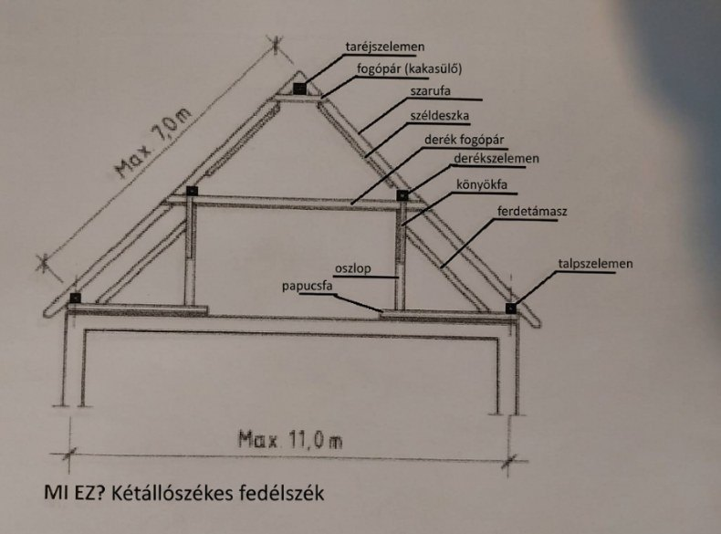
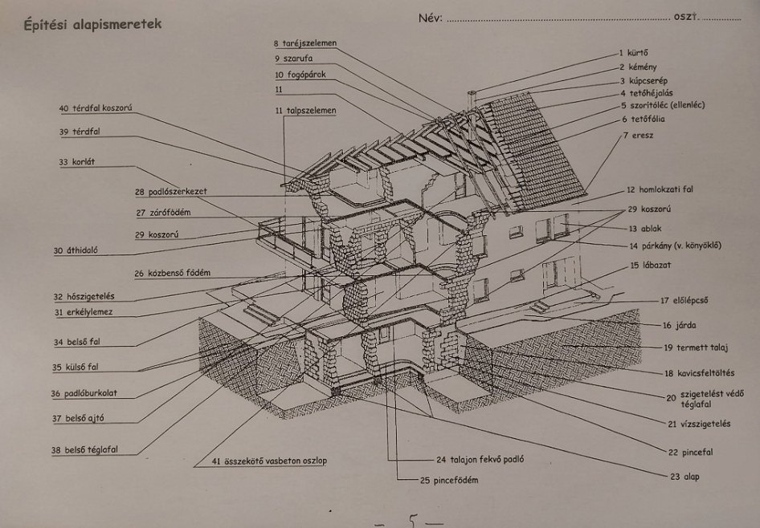
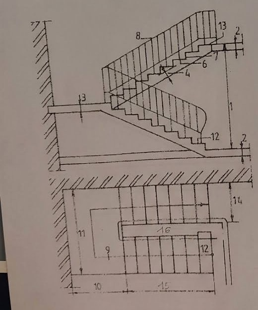
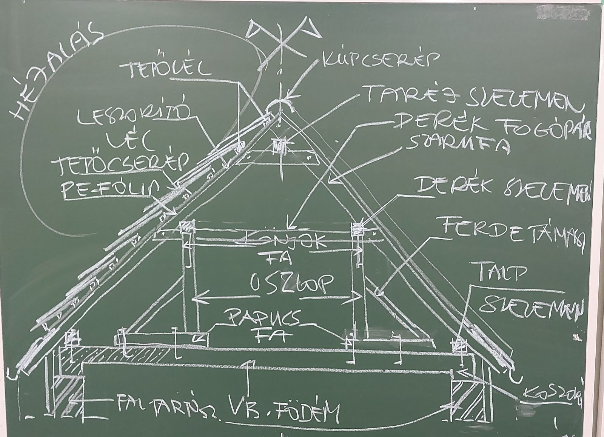

Építőipari alapismeretek · Témazáró B
Tetőszerkezet és lépcső
Végigmegyünk az órai jegyzeten: a hagyományos és a dőlt állószékes fedélszéken, a ház szerkezeti elemein, a lépcső fogalmain és a lépcső méretezésén. A végén egy gyakorló témazáró jön, a képes feladatokban a neveket kattintással kell a helyükre tenni.
Tanulófül · feliratos ábrák
Rajzok tanulmányozása
Nézd át a feliratozott rajzokat a teszt előtt. A képekre kattintva az eredeti méretű ábrát is megnyithatod.
Kétállószékes fedélszék

Az épület szerkezeti elemei


| Sz. | Rajzi fogalom |
|---|---|
| 1 | emeletmagasság |
| 2 | induló/érkező pihenő vastagsága |
| 3 | közbenső pihenő vastagsága |
| 4 | lépcsőlemez |
| 6 | belépő |
| 7 | fellépő |
| 8 | lépcsőkorlát |
| 9 | járóvonal |
| 10 | pihenő szélessége |
| 11 | lépcsőkar szélessége |
| 12 | indulókar |
| 13 | érkezőkar |
| 14 | lépcső szélessége |
| 15 | lépcsőkar hossza |
| 16 | orsótér |
1. modul
Hagyományos fedélszék: a kétállószékes fedélszék
Az órán megnézett szerkezet egy kétállószékes fedélszék: két sor oszlop (két „állószék”) tartja a szelemeneket, azokon fekszenek a szarufák. A tető vége le van kontyolva, vagyis a homlokzat felől is ferde tetősík zárja.
A kontyolt tetősík súlya többletterhet ad a csúcsra. Ezért a főállás oszlopai mellett a tetőcsúcsnál egy plusz csonka oszlop is be van toldva, ami nem fut le a padlóig.
Szelemenek: a vízszintes tartógerendák
Szarufák és héjazat
A szelemenekre méterenként fekszenek fel a szarufák, ezek hordják a tető héjazatát. A rétegrend alulról felfelé:
- Szarufa 1
- Másodlagos vízszigetelő fólia (PE-fólia) 2
- Ellenléc (leszorítóléc) 3
- Cserépléc (tetőléc) 4
- Cserépfedés 5

Főállás és mellékállás
Általában minden 4–5. szarufaállásnál van egy oszlopokkal alátámasztott főállás. A köztük lévő szarufaállások a mellékállások.
Tervrajzi jelölések
kör
két párhuzamos vonal
egy tengelyvonal
Merevítések és rögzítések
- Könyökfák: a szelemeneket és az oszlopokat merevítik hosszirányban (térbeli merevítés).
- Ferdetámasz és papucsfa: a főállásban az oszlopokat ferdetámaszok támasztják ki. Ezek alul egy teherelosztó papucsfába futnak, ami a padlószerkezethez van rögzítve, lehorgonyozva.
- Fogópárok (taréjfogópár, derékfogópár): a szelemenek alatt futnak, átkarolják a szarufákat, és átmenő csavarokkal rögzülnek az oszlopokhoz. Ezek adják a keresztirányú merevítést, és megakadályozzák a szétcsúszást.
- Kötőelemek: átmenő csavar, lehorgonyzó csavar, ácskapocs, és a hagyományos fakötések (bemarás, befaragás).
- Térbeli merevség (X, Y, Z): mindhárom irányban merevíteni kell. Ha a vízszintes síkban hiányzik a merevítés, azt gyakran ácskapoccsal vagy andráskereszttel pótolják.
2. modul
Dőlt állószékes fedélszék
Miért dőlnek meg az oszlopok?
Itt az oszlopok nem függőlegesek: a szarufákra merőlegesen meg vannak döntve. Azért, mert a tetőtér alatt folyosó húzódik, ezért a terheket a folyosó melletti teherhordó falakra kellett átadni.
A keresztmetszeteket és a teherátadást minden esetben a statikus számítja ki.
Szerkezeti sajátosságok
- Taréjfogópár: minden szarufaállásnál megvan.
- Derékfogópár: csak a főállásokban van, itt csonkítva: csak az oszlopig fut be.
- A ferdetámaszok, a könyökfák és a lehorgonyzott papucsfák itt is mindhárom irányban merevítenek.
Az óra végi kikérdezés: mi hova tartozik?
3. modul · Témazáró 2. feladat
Az épület szerkezeti elemei
A témazáró ábrája egy átmetszett ház, 41 számozott elemmel. Könnyebb megtanulni, ha a ház szerint, föntről lefelé csoportosítod őket.
Tető
- 1kürtő (kéményfej)
- 2kémény
- 3kúpcserép
- 4tetőhéjalás
- 5szorítóléc (ellenléc)
- 6tetőfólia
- 7eresz
- 8taréjszelemen
- 9szarufa
- 10fogópárok
- 11talpszelemen
Falak és nyílászárók
- 12homlokzati fal
- 13ablak
- 14párkány (belül ablakkönyöklő)
- 30áthidaló
- 34belső fal
- 35külső (teherhordó) fal
- 37belső ajtó
- 38belső téglafal (válaszfal)
- 39térdfal
- 41összekötő vasbeton oszlop
Födémek, koszorúk, padló
- 24talajon fekvő padló
- 25pincefödém
- 26közbenső födém
- 27zárófödém
- 28padlószerkezet
- 29koszorú
- 36padlóburkolat
- 40térdfal koszorú
Erkély
- 31erkélylemez
- 32hőszigetelés
- 33korlát (erkélykorlát)
Lábazat, pince, talaj
- 15lábazat
- 16járda
- 17előlépcső
- 18kavicsfeltöltés
- 19termett talaj
- 20szigetelést védő téglafal
- 21vízszigetelés
- 22pincefal
- 23alap (sávalap)
4. modul · Lépcső / lépcsőház fogalmai
Lépcsőfogalmak a rajzon
| Sz. | Fogalom | Mit jelent? |
|---|---|---|
| 1 | emeletmagasság | A két egymás feletti szint padlóvonala közötti teljes függőleges távolság. |
| 2 | induló/érkező pihenő vtg. | Az induló és az érkező szint födémvastagsága. |
| 3 | közbenső pihenő vtg. | A két kar közötti közbenső pihenőlemez vastagsága. |
| 4 | lépcső lemez | A ferde lépcsőkar teherhordó vasbeton lemezének vastagsága. |
| 6 | belépő | A lépcsőfok vízszintes felülete, erre lépünk rá. |
| 7 | fellépő | A lépcsőfok függőleges felülete (homloklapja). |
| 8 | lépcsőkorlát | Kiesés elleni védelem a lépcsőkar belső oldalán. |
| 9 | járóvonal | A karok tengelyében futó vonal: körrel indul, nyíllal végződik. |
| 10 | pihenő szélesség | A pihenő hasznos szélessége (mélysége). |
| 11 | lépcsőkar szélesség | Egy lépcsőkar hasznos szélessége. |
| 12 | indulókar | Az alsó szintről induló első lépcsőkar. |
| 13 | érkezőkar | A közbenső pihenőtől a felső szintre érkező kar. |
| 14 | lépcső szélesség | A lépcső szélessége. |
| 15 | lépcsőkar hosszúság | A lépcsőkar vízszintes vetületi hossza az alaprajzon. |
| 16 | orsótér | A két lépcsőkar közötti keskeny szabad rés. |
Lépcsőforduló és orsótér: helyszíni megfigyelés
A szép, szabályos szerkesztés alapja, hogy az orsótér és a lemez (kar, pihenő) csatlakozása, valamint a lépcsőfokok törésvonala egy vonalba essen. Ha ettől eltér, a lépcső attól még működik, csak a forduló nem lesz olyan rendezett.
5. modul · Lépcsőméretezés
A lépcső kiszámítása lépésről lépésre
Az adatokat a feladatlapról olvassuk le, a hiányzó méreteket négy lépésben számoljuk ki, a végén ellenőrzünk.
-
Fellépő magassága (m)
A teljes emeletmagasságot elosztjuk az összes fellépő számával. Az alaprajzon karonként 8 fellépő van, összesen n = 8 + 8 = 16.
m = 272 / 16 = 17 cm -
Belépő szélessége (sz)
A belépő, vagyis egy lépcsőfok vízszintes mélysége a feladatban adott.
sz = 28 cm -
Lépcsőkar vízszintes hossza (15)
Egy karon a belépők száma mindig eggyel kevesebb, mint a fellépőké, mert a kar utolsó fellépője már a pihenő (vagy az érkező födém) síkjára lép. 8 fellépőhöz tehát 8 − 1 = 7 belépő tartozik.
(15) = 7 × 28 = 196 cm -
Lépcsőkar szélessége (11)
A megoldólap szerint a lépcsőkar szélessége megegyezik a megadott 120 cm-rel.
(11) = 120 cm -
Ellenőrzés a lépcsőképlettel
A lépcső akkor kényelmes, ha 2m + sz = 60–64 cm.
2 × 17 + 28 = 62 cm → megfelelsz = 28 cm: 34 + 28 = 62 cm. Pont a 60–64 cm-es sáv közepén van.sz = 20 cm: 34 + 20 = 54 cm. Túl meredek lenne, ezért nem lehet ennyi a belépő.
Gyakorló témazáró
Most te jössz!
Válaszolj minden kérdésre, és töltsd ki a három ábrát. Ha minden kész, a Kiértékelés gomb megmutatja a pontszámot és azt, amit elrontottál.
- 1 Kattints egy névre a listában
- 2 Kattints a helyére a képen
- ↺ Egy beírt névre kattintva visszaveheted
I. Tetőszerkezetek kérdések
II. Nevezd meg a fedélszék elemeit! 11 hely
Tedd a neveket a kék keretes helyekre.
III. Az épület szerkezeti elemei 42 hely
A számok a helyükön maradtak, csak a nevek tűntek el. A koszorú kétszer szerepel, ezért kétszer van a listában is.
IV. Lépcső / lépcsőház fogalmai 15 hely
Kattints a fogalomra, majd arra a számra a rajzon, amelyik azt jelöli.
V. Lépcsőméretezés számolás
Adatok: emeletmagasság H = 272 cm, karonként 8 fellépő (összesen 16), belépő sz = 28 cm. Csak a számot írd be, cm-ben.